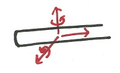

Connections and Supports (3-D Systems)
There are a variety of ways that bodies can be connected to or in contact with one another. Each type of connection will allow motion or rotation in some directions but it will constrain the bodies from rotating or moving in other directions. This page outlines some standard engineering connections and supports for three dimensional systems.
For each connection type: a definition is given, an example is shown, the schematic representation is shown, and constraints the joints place on the body is shown.
| Connection Type | Example | Schematic |
Free Body Diagram with Contraints (Constraint forces in red) |
# of Unknown Forces or Moments |
| Point Contact with a Frictionless Surface |

Small points of contact between two smooth bodies, such as the table legs and the smooth floor shown here, can be approximated as point contact with a frictionless surface.
|
|
Both of these connections result in a single unknown force. This force is always normal to the surface where the two objects meet. This connection type exerts no force parallel to the surface in either direction and no moments in any direction.
|
1 |
| A Ball Connection |
The rotating wheel on this office chair allows for movement in any direction along the surface. It is an example of a ball connection.
|
|
||
| Connection to a Flexible Cable |
The chains holding this tire swing up are examples of flexible cable connections.
|
|
A cable connection exerts a single constraint force in the direction of the cable. No other forces or moments are exerted.
|
|
| A Roller on a Rough Surface |
A car tire is an example of a roller on a rough surface. Friction prevents the tire from sliding perpendicular to the direction of rolling.
|
|
Both of these connection types result in two reaction forces. There is a normal force in a direction normal to the surface of contact. There is also a second reaction force perpendicular to the direction the wheel can roll.
|
2 |
| A Roller on a Rail |
A wheel on this train car is an example of a roller on a rail. The rail prevents the wheel from sliding perpendicular to the direction of rolling.
|
|
||
| Ball and Socket Joint |
The hip joint in the human body is an example of a ball and socket joint. It allows for rotation about all axes but no translation.
|
|
Both of these connection types exert forces in all directions, but no moments.
|
3 |
| Point Contact with a Rough Surface |
The back support of this wheelbarrow is an example of point contact with a rough surface. The area of contact is fairly small, but friction between the ground and the support cannot be neglected.
|
|
||
| Journal Bearing |
|
This type of bearing is a smooth shaft in a smooth hole. It allows for rotation about the axis of the shaft and translation along the axis of the shaft. Constraint forces and moments are exerted in all other directions however.
|
4 | |
| Universal Joint |
This socket set piece is an example of a universal joint. It can transmit forces in all directions, but only a moment about one axis.
|
|
A universal joint can exert forces in all directions. It also can exert a moment about a single axis. It allows for rotation in all other directions though.
|
|
| Thrust Bearing |
|

All of these connection types allow for rotation about a single axis. Reaction forces and moments are exerted to prevent motion and rotation in all other directions.
|
5 | |
| Hinge |
This hinge allows for rotation about only one axis.
|
|
||
| Pin Joint |

The hinge on this door is an example of a pin joint. It allows rotation about only one axis.
|
|
||
| Fixed Support |
This lamppost is anchored to the ground and is an example of a fixed support. The connection allows for no motion or rotation.
|
|
A fixed support prevents all motion and rotation. It can exert reaction forces in all directions and reaction moments about all axes.
|
6 |
 |
| Author: Jacob Moore has liscenced this work under a Creative Commons Attribution-NonCommercial 3.0 Unported License. |